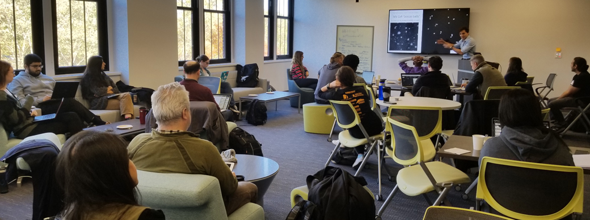

Hackathons & Mini-labs
A few times throughout the academic year, we meet either on a larger-scale (hackathons) or on a smaller-scale (mini-labs) to explore/analysis public neuroimaging datasets and/or improve neuroimaging resources (e.g., tutorial creation, code snippets or scripts, software development). These are typically informal, low-pressure gatherings aimed at improving skills and increasing research productivity. No coding experience required!
November 16-17, 2019
Brainhack DC
[Website]
Tutorials included: Intro to BIDS/fMRIprep, Intro to Jupyter Notebooks/Python for Neuroimagers, & Intro to Functional Connectivity
Sponsored by the Center for Functional and Molecular Imaging, Georgetown Department of Psychology, & Georgetown GradGov.
Contributors
 Shawn Rhoads 📢💻✅📋🤔🔍 |
 Junaid Merchant 📢💻✅📋🤔 |
 Laura Rice 📢💻✅📋🤔 |
The above follows the all-contributors specification (see emoji key).